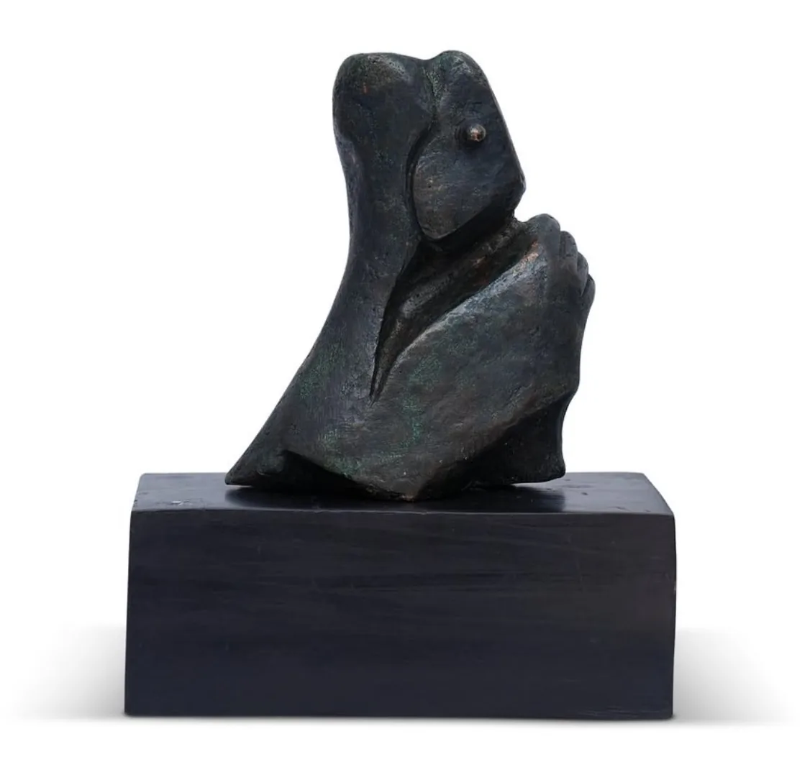
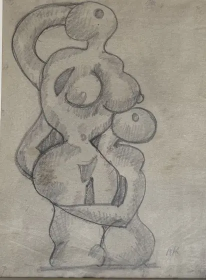

The collection · Sculptor
Amarnath Sehgal
1922–2007
A sculptor who came to Delhi out of Partition, and won every Indian artist a right over their own work.

Untitled (Figure)
Bronze on a wooden base
His life
- 1922Born in Campbellpur, now Attock, in undivided Punjab
- 1947Partition. The family leaves for India
- 1949Goes to New York to study art
- 1962Finishes the bronze mural at Vigyan Bhavan, New Delhi
- 1979The mural is pulled down. Opens a studio in Luxembourg
- 2005The Delhi High Court rules in his favour
- 2007Dies in New Delhi
Swipe along the thread
His story
Bronze that remembers
Sehgal grew up in Campbellpur, in the north of undivided Punjab, and trained in science in Lahore. Partition drove his family across the border in 1947. After two years in the Kullu valley he went to New York to study art, and came back to Delhi a sculptor.
He pared the human figure down to a few gestures, a raised hand or a bowed head, and cast it in bronze left rough and pitted, so the metal keeps the marks of his hands.
In 1979 his 140-foot bronze mural at Vigyan Bhavan was torn down and sent to a storeroom in pieces. He took the Government of India to court, and in 2005 the Delhi High Court held that an artist keeps a moral right over his work even after it has been paid for.
In his own words
I am convinced that an artiste has a moral right to his work…
Where he stands
On ground broken at Santiniketan
Sehgal never studied at Santiniketan. But the modern Indian sculpture he made in Delhi stands on ground Ramkinkar Baij broke there a generation earlier, when he set his figures out under the open sky.

Before him Ramkinkar Baij 1906–1980 A pioneer of modern Indian sculpture, who made the Santiniketan campus his gallery. This page
Amarnath Sehgal
1922–2007
Took the modern figure into rough-cast bronze in post-Partition Delhi.
This page
Amarnath Sehgal
1922–2007
Took the modern figure into rough-cast bronze in post-Partition Delhi. In the house with him
Thota Vaikuntam
Born 1942
Taught by Nandalal Bose's student K. G. Subramanyan, he casts his Telangana women in painted bronze.
In the house with him
Thota Vaikuntam
Born 1942
Taught by Nandalal Bose's student K. G. Subramanyan, he casts his Telangana women in painted bronze.
In the house
Sehgal at House of Legends
Four bronzes in our care, from a pressed slab of 1972 to small figures on their plinths. Come and walk around them, or ask us about one.


Also in the house
The other artists in our care
 Abanindranath Tagore
Abanindranath Tagore
 Gaganendranath Tagore
Gaganendranath Tagore
 Nandalal Bose
Nandalal Bose
 Ramkinkar Baij
Ramkinkar Baij
 Sarada Charan Ukil
Sarada Charan Ukil
 Maninder Gupta
Maninder Gupta
 Indra Dugar
Indra Dugar
 Hemen Mazumdar
Hemen Mazumdar
 Atul Bose
Atul Bose
 J. P. Gangooly
J. P. Gangooly
 D. P. Roy Chowdhury
D. P. Roy Chowdhury
 M. V. Dhurandhar
M. V. Dhurandhar
 Ambika Dhurandhar
Ambika Dhurandhar
 M. K. Parandekar
M. K. Parandekar
 Madhav Satwalekar
Madhav Satwalekar
 Zainul Abedin
Zainul Abedin
 Chittaprosad
Chittaprosad
 Gopal Ghose
Gopal Ghose
 Biren De
Biren De
 Nasreen Mohamedi
Nasreen Mohamedi
 A. A. Almelkar
Thota Vaikuntam
A. A. Almelkar
Thota Vaikuntam
Write to us
See Sehgal in person
Every work in the house can be seen by appointment, with its record and a condition report ready for you. If your family has kept a work by Amarnath Sehgal, we would be glad to hear about it too.